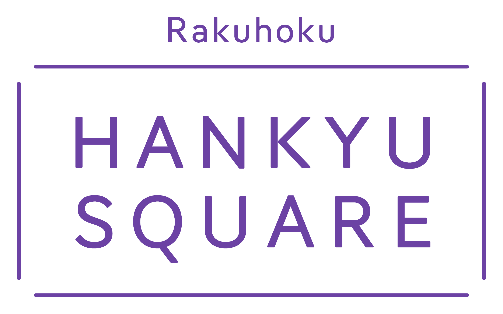
特別協賛
洛北阪急スクエア
「こころ躍る、ちょっといい毎日」をコンセプトに、ファッション、生活雑貨、食、遊びがそろう洛北エリアの滞在型ショッピングセンターです。
京都市左京区高野西開町36番地公式サイトを見る ↗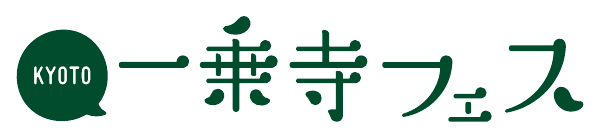
一乗寺のお祭り
一乗寺が、ひとつの輪になる日。
食べて、つくって、あそんで、たいけんして、最後はみんなで輪になって踊る。
地域の文化と新しい楽しさが出会う、一乗寺のお祭りです。
SPECIAL SPONSORS

「こころ躍る、ちょっといい毎日」をコンセプトに、ファッション、生活雑貨、食、遊びがそろう洛北エリアの滞在型ショッピングセンターです。
京都市左京区高野西開町36番地公式サイトを見る ↗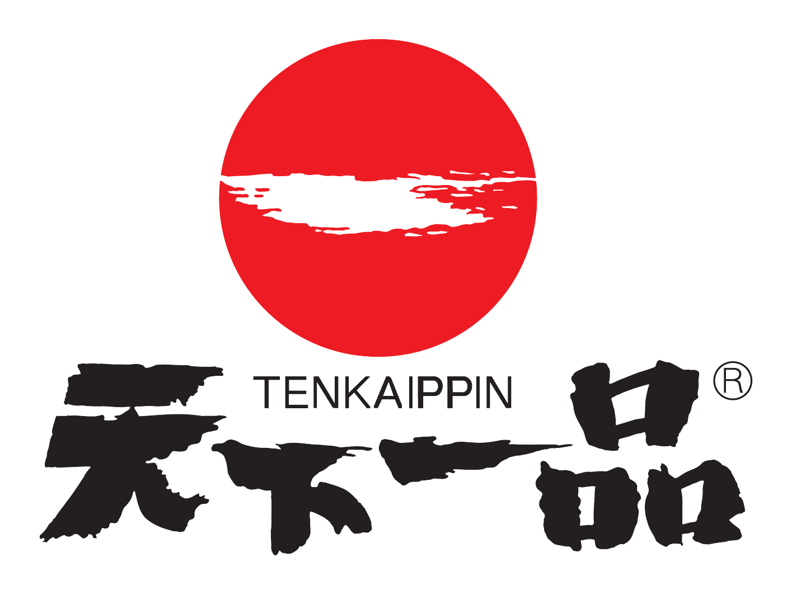
ABOUT
いつもの公園に、地域のお店、大学、子どもたち、大人たちが集まる一日。食べる、作る、遊ぶ、踊る。その全部を行き来しながら、一乗寺の新しい思い出をつくります。
一乗寺フェスの過ごし方
一乗寺に店舗を構えるお店や、さまざまなイベント・お祭りで人気のお店が一乗寺公園に集まります。一乗寺フェスならではの屋台村で、お祭りの食事と飲み物をお楽しみください。
開催時間15:00〜20:00予定※商品は有料です。
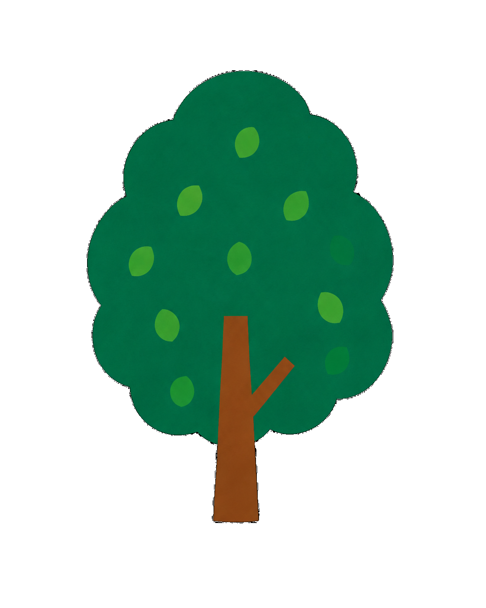
出店予定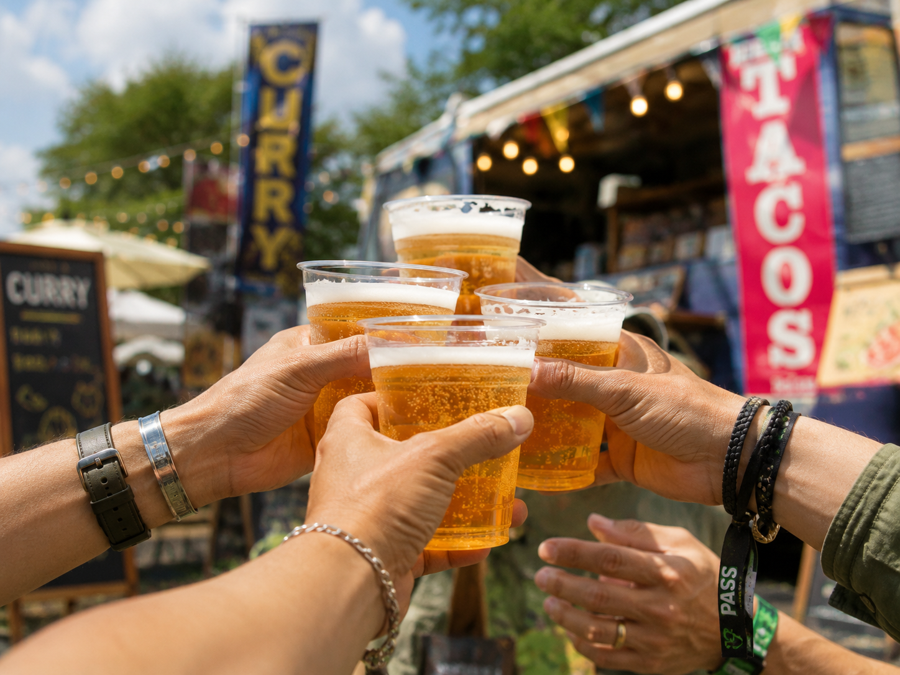
出店：一乗寺ドットネット商店会
会場で気軽に楽しめるビールや酎ハイ、ソフトドリンクを販売します。
出店：旬バーせん
甘辛いトッポギを中心に、マッコリ、ソフトドリンク、子ども向けのお菓子も楽しめます。
出店：Cafe&Bar KARIN
チキンパルミジャーノ、フィッシュ＆チップス、フライドポテト、フローズンフルーツのカクテルジュースなどを販売。
出店：ペペラッチャ
スパイスの香りが食欲をそそる本格スリランカカレー。
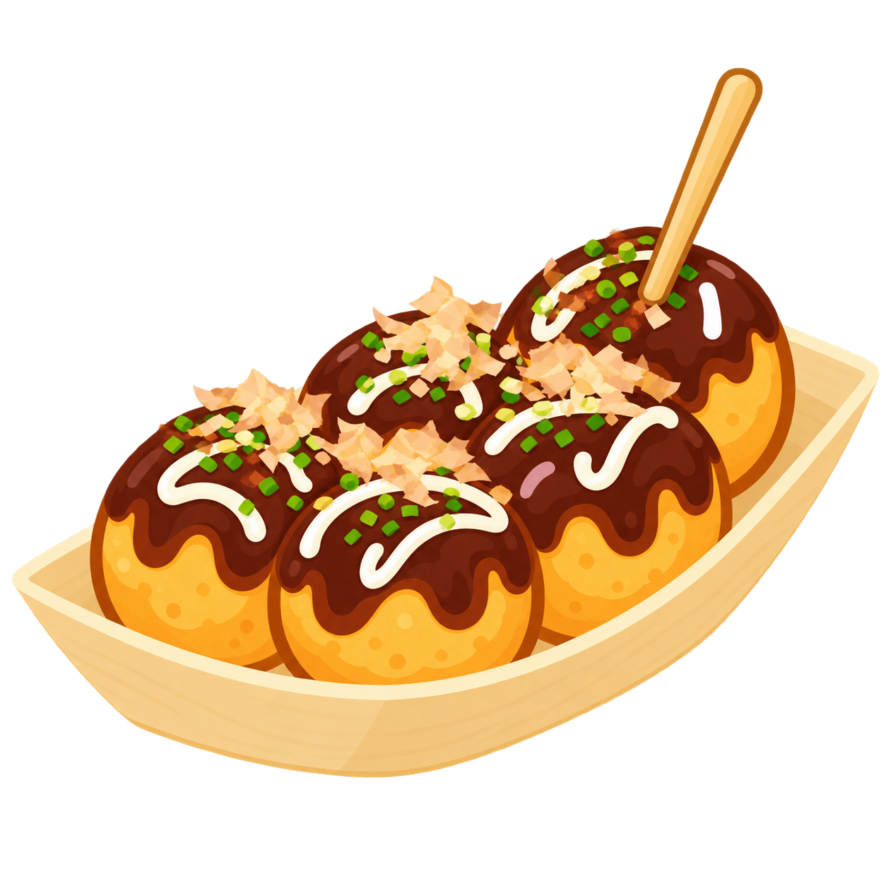
出店：タコとケンタロー
たこ焼き、たこ九条、たこせん、自家製レモンスカッシュなどを販売。
出店：燻製工房 いちなん
もったいないカレー、フランクフルト、ナチュラルワイン、ソフトドリンクなどを販売。
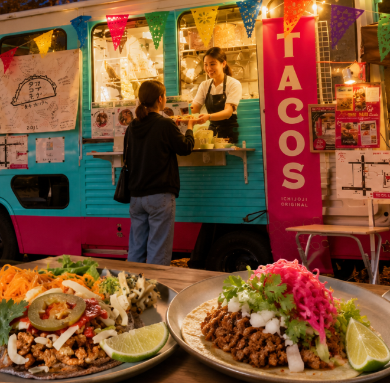
出店：オブリタコス
挽き肉のタコス、豚のタコス、かき氷、さくらんぼスカッシュなどを販売。
※出店内容・提供品は予告なく変更される場合があります。
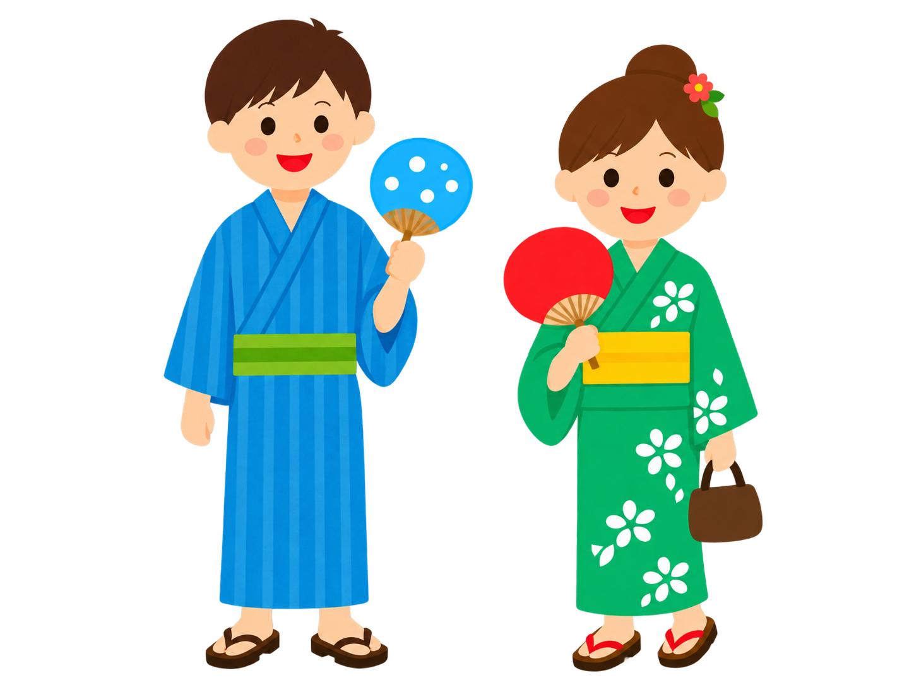
地域に伝わる踊りを受け継ぎながら、新しいリズムにも心をひらいて。世代も国境もこえて、笑顔の輪をひろげましょう。
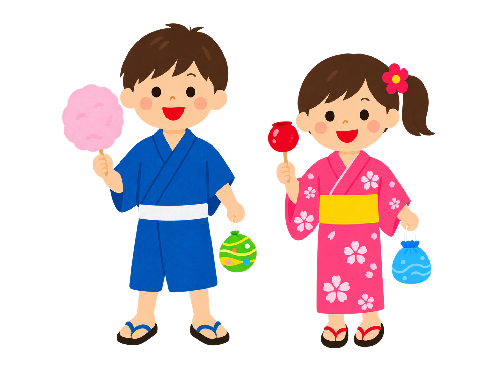
京都の神輿文化に伝わる鳴鐶廻し。響き渡る音と迫力ある動きが、お祭りの始まりを告げます。
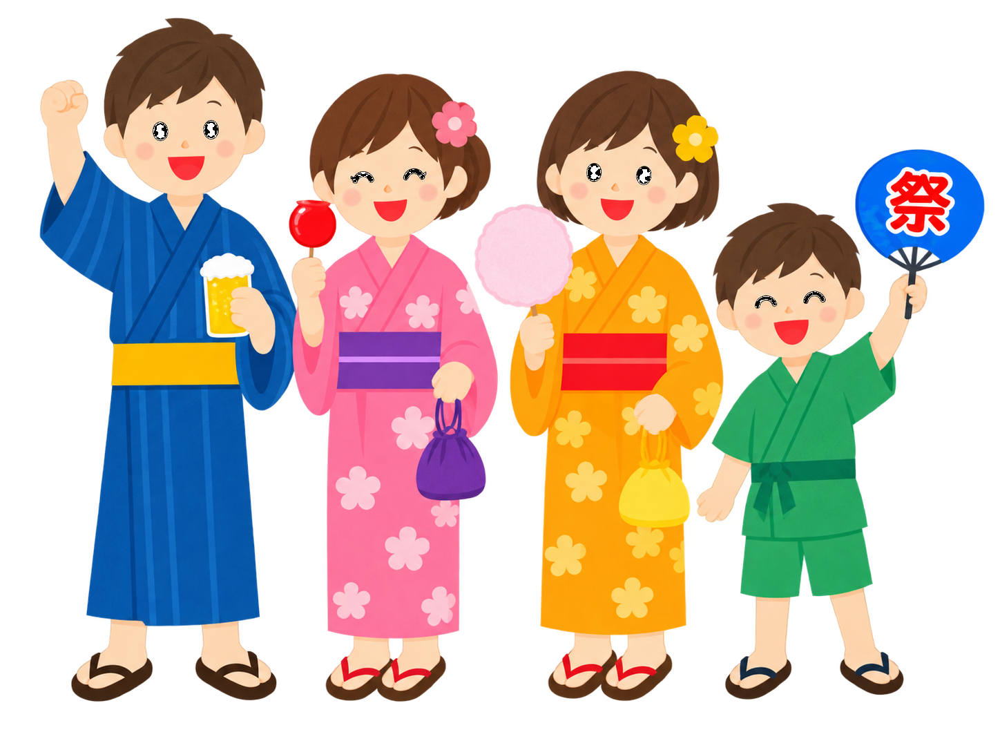
往年のヒット曲やJ-POP、洋楽をDJがつなぐ新感覚の盆踊り。誰でも気軽に参加できます。
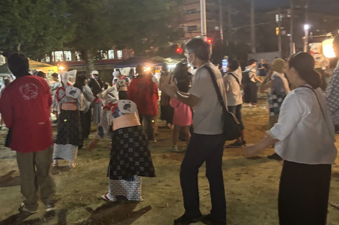
七五調の音頭に合わせて輪になって踊る一乗寺の伝統。最初に所作の説明があります。
一乗寺公園で「一乗寺フェス」を開催します。ご家族やご友人と一緒に、楽しい一日をお過ごしください。
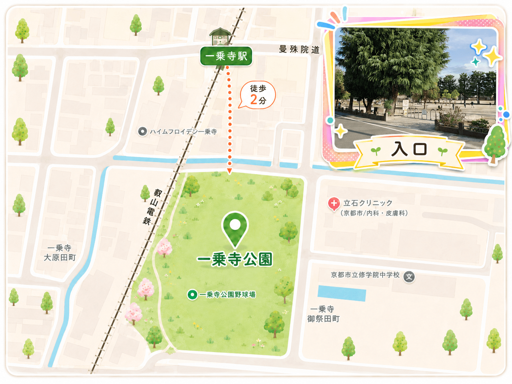
叡山電鉄「一乗寺駅」から徒歩約2分
専用駐車場はありません。公共交通機関でのご来場にご協力ください。
混雑緩和のため、時間に余裕をもってご来場ください。
当日のご案内や、よくあるご質問をまとめました。安心してご来場いただけるよう、事前にご確認ください。
雨天の場合は中止です。最新情報は公式サイトでご確認ください。
入場は無料です。一部のワークショップ、縁日、飲食は有料です。
親子で参加できる企画があります。会場内ではお子さまから目を離さないようお願いします。
入場受付は不要です。各企画の受付方法は会場の案内をご確認ください。
事情により変更になる場合があります。最新情報は公式サイトでお知らせします。
店舗によって異なります。現金をご用意いただくと安心です。
地域の団体や大学、商店、企業、そしてボランティアのみなさまのご協力によって成り立っています。心より感謝申し上げます。